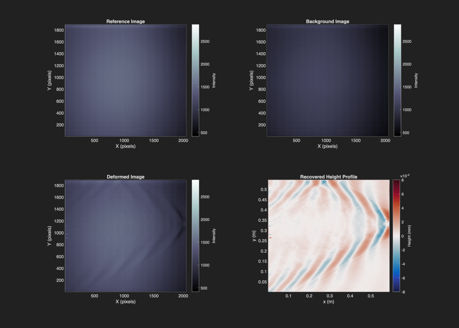

Contents
%-------------------------------------------------------------------------- % Script Name: ftp_example_experiment.m % Author: Adam Anglart % Date: June 20, 2024 % Description: This script demonstrates the use of the `ftp_reconstruction` % function for Fourier Transform Profilometry (FTP) using % experimental data of a boat wake. The script takes reference and deformed % fringe images, computes the phase difference, and then % recovers the height profile of a surface based on the % phase-to-height relationship. % % Inputs: The script loads three images: % - 'ref.tif': Reference fringe pattern (background) % - 'gray.tif': Gray fringe pattern (background) % - 'def.tif': Deformed fringe pattern (with phase shift) % % Outputs: A plot of the recovered height profile of the surface. % % Notes: The parameters used for phase-to-height conversion are % based on experimental setup specifics, including pixel size, % camera/projector distances, and fringe parameters. The height % is derived from the recovered phase difference using known % geometric relationships. %-------------------------------------------------------------------------- clc; clear; close all; addpath(fullfile(pwd, '..', 'src')); addpath(fullfile(pwd, '..', 'data')); %-------------------------------------------------------------------------- % Setup parameters (dimensions, pixel size, fringe parameters, etc.) %--------------------------------------------------------------------------
Optical setup
L = 1.88; % [m] Distance from camera/projector to surface D = 0.45; % [m] Distance from camera to projector
Pixel size calculation
T10 = 148; % Number of pixels per 10 wavelengths (carrier frequency) cm = 10; % Length in centimeters for the number of pixels pxs = 346.67; % Number of pixels corresponding to the length px_size = cm / pxs / 100; % [m] Pixel size (in meters) % Fringes parameters l = T10 * px_size / 10; % Fringe period (wavelength) w = 2 * pi / l; % Spatial frequency of the fringes
Phase difference parameters
th = 0.6; % Width of the Gaussian window (used in phase recovery) ns = 1; % Window type: 1 - Gaussian window, <1 - Tukey window %-------------------------------------------------------------------------- % Load and preprocess images %--------------------------------------------------------------------------
Loading images
'ref.tif' is the reference fringe pattern (background) 'gray.tif' is the background gray fringe image 'def.tif' is the deformed fringe pattern after phase shifting
dY0B = double(imread('ref.tif')); % Reference fringe image (background) dYB = double(imread('gray.tif')); % Background gray fringe image temp = double(imread('def.tif')); % Deformed fringe image % Subtract the background from the reference fringe to get the corrected reference dY0 = dY0B - dYB; % Background-subtracted reference fringe %-------------------------------------------------------------------------- % Phase recovery and height calculation %--------------------------------------------------------------------------
Phase recovery using ftp_reconstruction
The function 'ftpStartBasic' is used to recover the phase difference between the deformed fringe image and the reference fringe image.
dY = temp - dYB; % Subtract background from deformed image phase = ftp_reconstruction(dY, dY0, th, ns); % Recovered phase difference % Handle any NaN values (if the phase function results in undefined values) phase(isnan(phase)) = 0; % Replace NaN values with 0
Height profile calculation
Using the phase difference, we apply the phase-to-height relation
eta = L * phase ./ (phase - w * D); % Recovered height profile %-------------------------------------------------------------------------- % Plotting the Results %-------------------------------------------------------------------------- figure('Position', [100, 100, 1400, 1000]); % Set common color limits for all images clim_val = [min([dY0B(:); dYB(:); temp(:)]), 0.7*max([dY0B(:); dYB(:); temp(:)])]; % Set common axis limits based on the resolution of the images xlim_val = [1 size(dYB, 2)]; ylim_val = [1 size(dYB, 1)]; % Subplot 1: Reference Image subplot(2, 2, 1); pcolor(dY0B); shading flat; title('Reference Image'); xlabel('X (pixels)'); ylabel('Y (pixels)'); axis equal; xlim(xlim_val); ylim(ylim_val); h1 = colorbar; colormap bone; clim(clim_val); % Apply the common color limits using clim ylabel(h1, 'Intensity'); % Label colorbar for intensity % Subplot 2: Background Image subplot(2, 2, 2); pcolor(dYB); shading flat; title('Background Image'); xlabel('X (pixels)'); ylabel('Y (pixels)'); axis equal; xlim(xlim_val); ylim(ylim_val); h2 = colorbar; colormap bone; clim(clim_val); % Apply the common color limits using clim ylabel(h2, 'Intensity'); % Label colorbar for intensity % Subplot 3: Deformed Image subplot(2, 2, 3); pcolor(temp); shading flat; title('Deformed Image'); xlabel('X (pixels)'); ylabel('Y (pixels)'); axis equal; xlim(xlim_val); ylim(ylim_val); h3 = colorbar; colormap bone; clim(clim_val); % Apply the common color limits using clim ylabel(h3, 'Intensity'); % Label colorbar for intensity % Subplot 4: Recovered Height Profile (Wavefield) % Convert pixel coordinates to meters for the wavefield x_meter = (1:size(dYB, 2)) * px_size; % x in meters y_meter = (1:size(dYB, 1)) * px_size; % y in meters subplot(2, 2, 4); pcolor(x_meter, y_meter, eta); shading flat; title('Recovered Height Profile'); xlabel('x (m)'); ylabel('y (m)'); axis equal; xlim([min(x_meter), max(x_meter)]); ylim([min(y_meter), max(y_meter)]); h4 = colorbar; clim(8e-3 * [-1 1]); % Set the color limits for better contrast cmocean('balance'); % Set colormap to 'balance' for improved visual contrast ylabel(h4, 'Height (mm)'); % Label colorbar for height in mm saveas(gcf, 'ftp_example_experiment_boat_wake.png', 'png'); %-------------------------------------------------------------------------- % Notes: % 1. The image files ('ref.tif', 'gray.tif', 'def.tif') must be present in % the working directory for this script to function. % 2. The recovered height map `eta` represents the surface deformation % based on the phase difference between the reference and deformed fringe % patterns. % 3. The parameters like pixel size, fringe period, and window type should % be adjusted based on the specific experimental setup for accurate results. %--------------------------------------------------------------------------